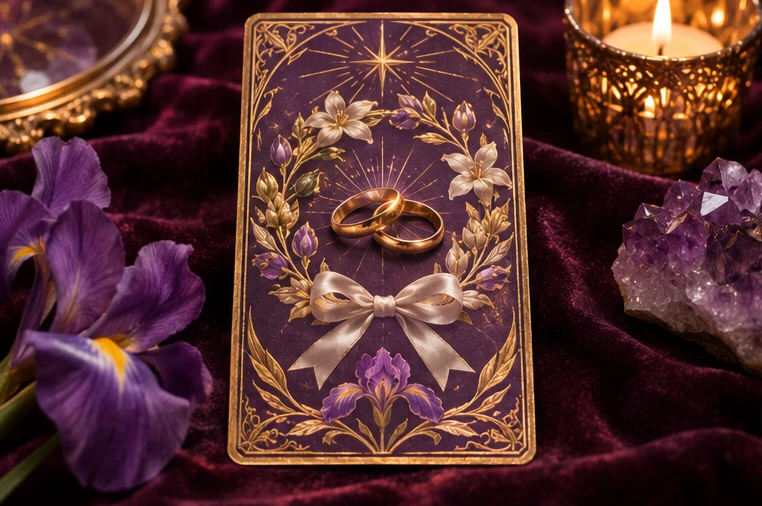
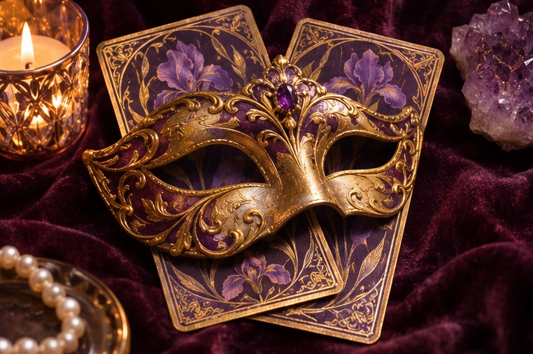
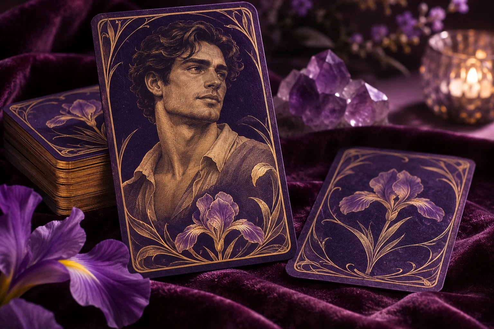
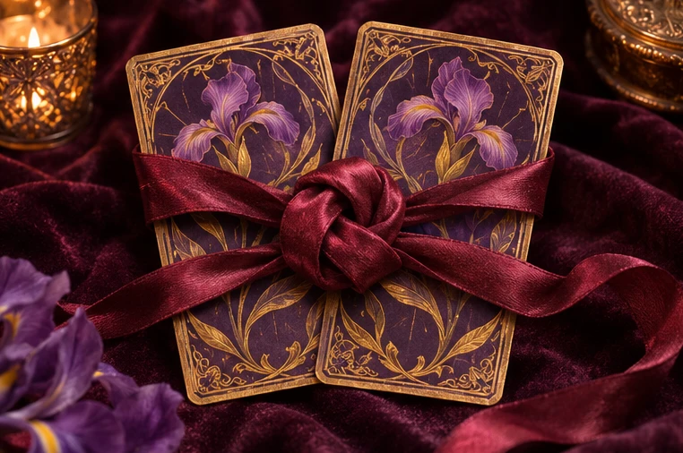
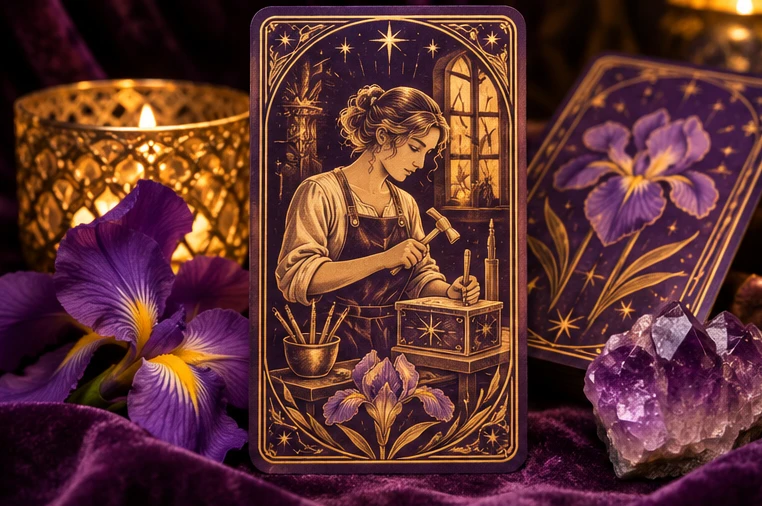
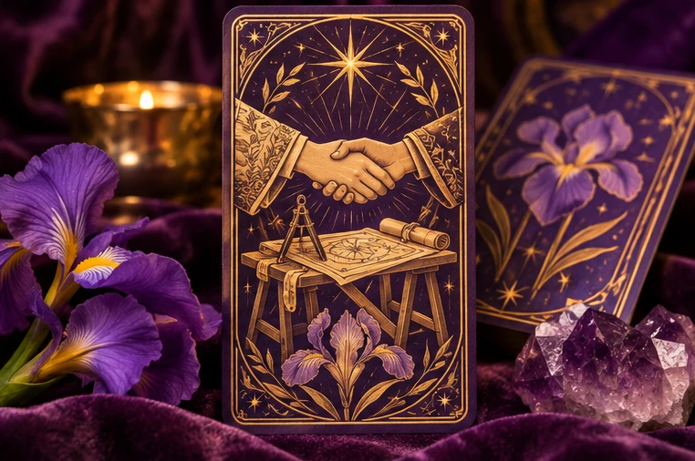
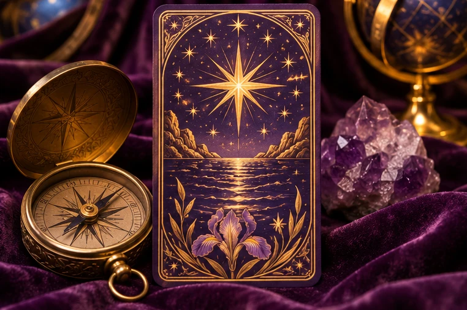
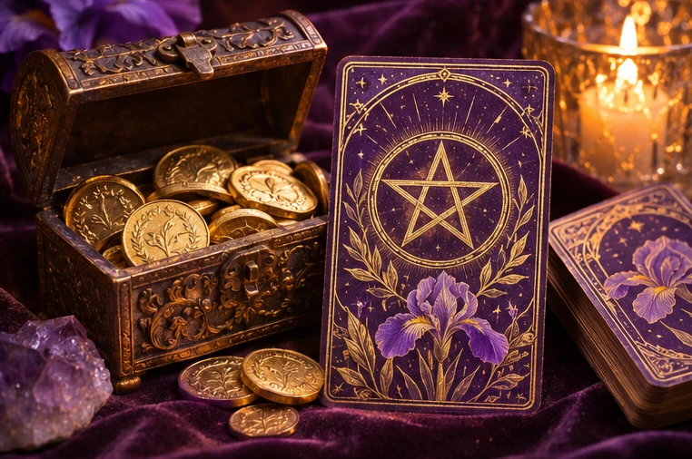

12 месяцев
Значение расклада:
1. Главные энергии и события c января по декабрь
Год рассчитывается с момента обращения или с календарного.
Срок выполнения - до 5-х дней
Видеоозапись
Прогноз на год или выбранный период
Значение расклада:
1. Главные энергии и события c января по декабрь
Год рассчитывается с момента обращения или с календарного.
Срок выполнения - до 5-х дней
Видеоозапись
Сомнения, подозрения на измену, проблемы в отношениях, подходящий ли кандидат..

Значение расклада:
1. Какой вы представляете себя?
2. Как вы выглядите в глазах мужчин?
3. Ваши представления о будущем супруге
4. Место или обстоятельство, при которых произойдет встреча
5. Что нужно сделать, чтобы ускорить встречу?
6. Есть ли кармические причины, не дающие вступить в брак?
7. Вероятность выйти замуж в загаданный период
Срок выполнения - до 3-х дней
Видеозапись

Значение расклада:
1. Ваше отношение к партнеру, на данный момент
2. Отношение вашего партнера к вам на данный момент
3. Причины, которые привели к подозрениям
5. Есть ли реальный повод к подозрениям
5. Была ли измена на самом деле
6. Как необходимо поступить вопрошающему
7. Общие перспективы отношений
Срок выполнения - до 3-х дней
Видеозапись

Значение расклада:
1. Мысли человека о вас, то, как он вас воспринимает
2. Его чувства к вам
3. Объяснение поведения человека по отношению к вам
4. Восприятие вашей связи, к чему стремится
5. Его переживания и страхи, то, что его может не устраивать в отношениях с вами
6. Планы партнера, что он готов сделать, чтобы продолжить отношения
7. Тенденции развития отношений на ближайшие 3 месяца
Срок выполнения - до 3-х дней
Видеозапись

Значение расклада:
1. Какой вас видят мужчины
2. Что в вас отталкивает мужчин
3. Что в вас нравится мужчинам
4. Каких мужчин вы притягиваете
5. Какого мужчину стоит искать
6. Тенденции развития в личной жизни на загаданный период
7. Что поможет создать счастливый союз
Срок выполнения - до 3-х дней
Видеозапись
Думаете сменить работы, принимать ли заманчивое предложение, ваша самореализация..

Значение расклада:
1. Ваше отношение к работе
2. Преимущества которые даёт вам эта работа
3. Чем она вас не устраивает, чего не хватает
4. Что делать, чтобы улучшить ситуацию на работе
5. Какие действия могут привезти к ухудшению
6. Перспективы на работе в течении полугода
7. Совет от карт
Срок выполнения - до 3-х дней
Видеозапись

Значение расклада:
1. Каким образом сотрудничество повлияет на ваши дела?
3. Как сложатся ваши отношения с потенциальным партнером в загаданный период?
4. Каким человеком является потенциальный партнер по характеру?
5. Чего он ожидает от сотрудничества?
6. Каким потенциалом он обладает в плане финансов и профессиональных способностей?
7. Как сложится ваше сотрудничество на загаданный период?
8. Совет от карт
Срок выполнения - до 3-х дней
Видеозапись

Значение расклада:
1. Моя страсть, чем я увлечен, что мне действительно нравится (3 карты)
2. На что я способен, в каких сферах деятельности я силён, мои сильные стороны (3 карты)
3. Лучше ли для меня реализовать себя в команде или себя в собственном бизнесе?
4. Совет от карт
Срок выполнения - до 3-х дней
Видеозапись
Финансы, принятие решения, переезд, судебные дела, желание и тд
Значение расклада:
1. Исполнится ли ваше желание?
● Если НЕТ, то почему?
● Если ДА, то как это будет
Срок выполнения - до 3-х дней
Видеозапись
Значение расклада:
1. Ваше отношение к выбору и предстоящему решению
2. Последовательность развития событий, в том случае если вы будете действовать в 1 варианте
3. Последовательность развития событий, в том случае если вы будете действовать в 2 варианте
4. Итог выбора и совет от карт
Срок выполнения - до 3-х дней
Видеозапись

Значение расклада:
1. Ваше отношение к деньгам
2. Ваш потенциал в финансовой сфере
3. Изменения финансов, которые принесёт новый год
4. Позитивные или негативные внешние влияния
5. Траты и потери в течении года
6. Возможный источник финансовых проблем
7. Расходы, которые можно сократить, чтобы улучшить ваше положение
8. Способ увеличить ваш потенциал в сфере заработка
9. Финансовые итоги года.
10. Совет от карт, как себя правильно вести с деньгами, чтобы их преумножить
Срок выполнения - до 3-х дней
Видеозапись